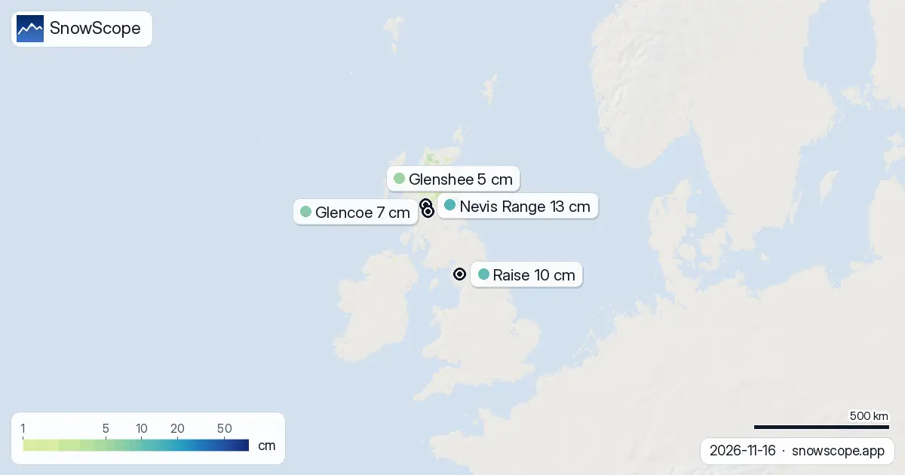

Warmer day clears UK lowlands; snow retreats to 800 m
Yesterday's mild conditions cleared 1290 km2 of snow from the UK mountains, pushing the snow line up to 800 metres.
See the live snow forecast for Nevis Range in the SnowScope appSnow depth, powder alerts and the 3D map, free.
A warm day removes cover from low ground
Yesterday's mild conditions made a clear mark across Scotland's ski mountains. The snow cover shrank by 1290 square kilometres in just 24 hours, dropping from 7030 square kilometres yesterday to 5740 square kilometres today. This pushed the snow line up to 800 metres elevation, a climb of about 300 metres since the week began.
The thaw hit lower slopes hardest; only 15 percent of the mapped area still carries white cover. Early-season snow is thin everywhere, so this loss was fast and widespread. For skiers, the message is clear: low ground is off-limits, and you need to find the high peaks.
| Resort | Snow depth | New snow, 72 h | Coming, next days | Top |
|---|---|---|---|---|
| Nevis Range | 13 cm | 5 cm | 6 cm | 1,190 m |
| Raise | 10 cm | 1 cm | 8 cm | 840 m |
| Glencoe | 7 cm | 3 cm | 9 cm | 1,079 m |
| Glenshee | 5 cm | 2 cm | 18 cm | 1,028 m |
| Cairngorm Mountain | 4 cm | 6 cm | 11 cm | 784 m |

Snow lives above 1000 metres
Altitude has become everything. Above 1000 metres, the average depth reaches 4 centimetres with 89 percent coverage. Between 500 and 1000 metres, there is roughly 1 centimetre average and 31 percent coverage, mostly in patches. Below 500 metres, there is almost no snow left; just 9 percent of the low ground has any white.
This explains why yesterday's warmth did such damage: most snow sat in the thaw zone. For skiing, you need to stay above 1000 metres to find consistent cover.

One week of rapid buildup, then one day of loss
A week ago the UK had just 270 square kilometres of snow, barely a season opener. The cold snap that followed added 5470 square kilometres in seven days, a sharp recovery that promised better things. Yesterday's thaw then removed 1290 square kilometres in one day, showing how fragile early-season cover remains when the air warms.
Nevis Range still leads with 13 centimetres depth at 1190 metres, the highest peak we monitor. The Northwest Highlands and Cairngorms stand out for holding 11 centimetres of new snow each even after yesterday's warmth. Ben Nevis and Lochaber have 5 centimetres but sit at high altitude, so the cover is more stable and less prone to thaw.
Five resorts ranked by depth and height
Nevis Range offers the most snow at 13 centimetres and the highest ground at 1190 metres, the best starting point today. Raise has 10 centimetres but stands lower at 840 metres, leaving it vulnerable if another warm day arrives. Glencoe holds 7 centimetres with good height at 1079 metres.
Glenshee sits thin at 5 centimetres but has the advantage of incoming snow; it is forecast to receive 18 centimetres over the next three days, more than any other resort. Cairngorm Mountain has only 4 centimetres depth and low relief at 784 metres, making it the toughest choice for early-season skiing. For stability and cover, pick the high mountains; Nevis Range and Glencoe are safer bets than the lower resorts.
Fresh snow arrives tomorrow; the season picks up pace
Tomorrow, 17 November, is the snowiest day in the forecast. Up to 12 centimetres may fall across the mountains, real accumulation for early November and a sharp contrast to yesterday's thaw. The three days ahead bring up to 13 centimetres total to the wettest slopes. Over the next week, some areas could see as much as 17 centimetres, a substantial recovery if it falls as expected.
Glenshee stands out as the forecast winner, expected to receive 18 centimetres in the next three days alone, far more than other resorts; if that forecast holds, Glenshee becomes the strong choice mid-week despite its thin cover today. This fresh snow will deepen the pack but will also bring avalanche risk; anyone heading off-piste must check the official avalanche forecast before you go.
The Northwest and the Cairngorms lead the new-snow chase
The Northwest Highlands and Cairngorms are where the fresh snow will keep falling through the week. Both picked up 11 centimetres in the past 72 hours despite yesterday's thaw, a sign that the cold air is concentrated there and will stay.
Ben Nevis and Lochaber received 5 centimetres; they sit high enough that most of that snow survived the warm day intact. If you want to find the deepest fresh snow and the most stable cover, the Northwest Highlands and Cairngorms offer the best odds for the next few days. These spots are set to gain more than the lower ranges over the week ahead, so they should be on your shortlist.
Tips for skiers
- Stick to elevations above 1000 metres where coverage is solid at 89 percent; lower ground is thin and risky.
- Nevis Range and Glencoe offer the safest options today with the most depth and height; Cairngorm Mountain and Raise are marginal.
- Tomorrow brings the first real snow day of the season; plan your trip for 17 November onward if possible to ski fresher cover.
- Glenshee will gain the most snow in the next three days (18 cm forecast) and may become the best option by mid-week.
- If you head off-piste, check the official avalanche forecast before you go; fresh snow always brings avalanche risk.
About these numbers
Resort snow depths are the deepest snow on the resort's upper slopes on the date shown; they are estimates for an area, not a measurement at one point. Forecasts can change. Always read the official avalanche bulletin before going off-piste.
Cite this report
For research, teaching or the press: the numbers and charts are free to reuse under CC BY 4.0 with this citation.
SnowScope (2026), Warmer day clears UK lowlands; snow retreats to 800 m, https://snowscope.app/blog/en/2026/11/uk-snow-report-16-november-2026.html, accessed 2026-11-16
SnowScope (Atlas Labs). (2026, November 16). Warmer day clears UK lowlands; snow retreats to 800 m. SnowScope snow reports. https://snowscope.app/blog/en/2026/11/uk-snow-report-16-november-2026.html
BibTeX
@misc{snowscope2026uksnowreport16november20,
author = {{SnowScope (Atlas Labs)}},
title = {Warmer day clears UK lowlands; snow retreats to 800 m},
year = {2026},
month = nov,
howpublished = {\url{https://snowscope.app/blog/en/2026/11/uk-snow-report-16-november-2026.html}},
note = {Published 2026-11-16 20:42 UTC; accessed 2026-11-16}
}· CC BY 4.0 · Methods, data and tools →
Nevis Range: snow and temperature by height, this winter vs last (tools) →
Follow Nevis Range
Free: a message when fresh snow is coming, and the forecast every morning.
More snow reports

Next week at Flaine: 27 cm forecast at the top (9–46 cm range), with four key snow days. Data from 16 November.

Despite 60 cm of fresh snow in 72 hours, Scandinavia's mid-November depths are well below average as of 16 November.

100 mountain ranges mapped on 9 November 2026: Western Canada leads with 123 cm, the Alps have thin early snow, and 17 ranges are still bare.